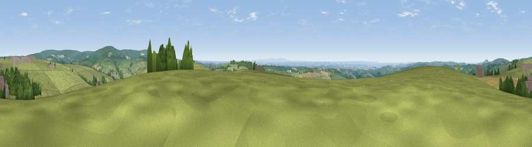

Viewpoint near Bratton Fleming
#8569 in England · top 20% of its area beats it · near Bratton Fleming · access?Where it is
The exact computed spot (SS 66112 37875). Click the marker for map links.
Public access: no public right of way or access land is recorded at this exact spot — it may be on private land. Computed from Natural England's CRoW access layer and OpenStreetMap rights of way — not the legal definitive map. Always verify locally.
The view, rendered

A 360° render of this exact spot computed from the terrain model, tree cover and land cover — summer colours, afternoon light, calibrated against photographs of famous viewpoints. Real trees, hedges and buildings will differ in detail.
The panorama
Grey silhouette: terrain skyline in each direction (720 bearings, Earth curvature and refraction included). Dashed green: skyline with trees (+15 m) and buildings (+8 m) as obstacles. Blue strip: how far the ground is visible on each bearing.
Where the view opens
Wedge length = distance to the farthest visible ground on that bearing (vegetation-aware). Rings at 10, 25 and 50 km.
What fills the view
81% grassland · 9% woodland · 7% cropland · 2% built-up ·
Angular shares of the visible panorama (visual magnitude), not map area. Landscape diversity 0.30 (0–1 Shannon).
Key numbers
More beautiful places nearby
The staircase of upgrades: each row has a higher view potential than everything closer. Driving times are estimates from straight-line distance, calibrated against real road routing — check an actual route before setting out.
| Place | Direction | Drive | Score |
|---|---|---|---|
| Viewpoint near Bratton Fleming | WNW · 1 km | ~2 min | 69.8 |
| Viewpoint near Challacombe | ENE · 4 km | ~10 min | 75.8 |
| Viewpoint near Challacombe | NNE · 7 km | ~14 min | 77.1 |
| Viewpoint near Martinhoe | NNW · 10 km | ~20 min | 86.5 |
| Holdstone Hill | NNW · 11 km | ~20 min | 90.2 |
| The Knoll | ESE · 101 km | ~125 min | 91.0 |
51.12447, -3.91458 · source: screening · position refined by local search. Computed location — check access rights before visiting.